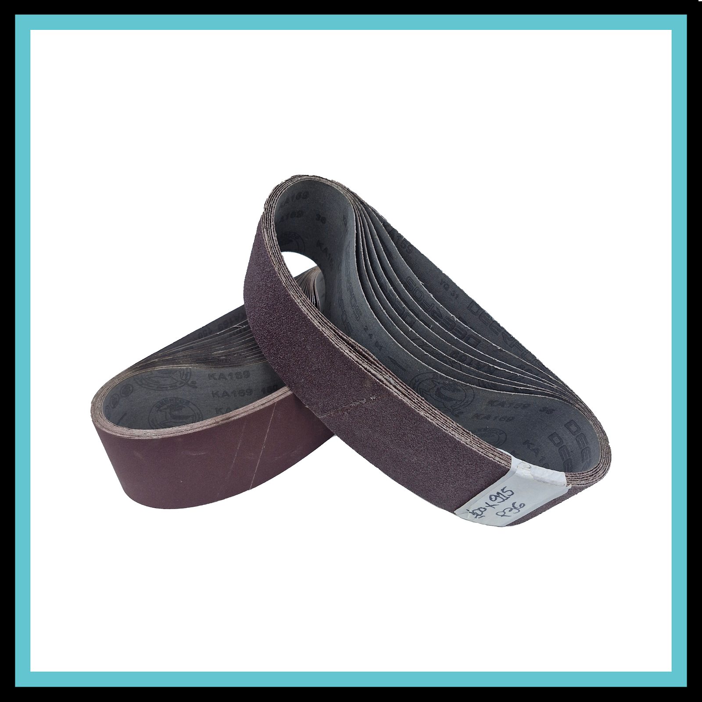

Cintas de Lixa de Óxido de Alumínio Robusta – 915x100 mm (Kit com 10 unidades) / 100x915 mm (Kit com 10 unidades).
Compatibilidade
- Lixadeira de Cinta Combinada de Bancada 6” 350W Bivolt FortG Pro FG058.
- Qualquer lixadeira de bancada ou cutelaria que utilize o padrão de circunferência de 915 mm por 100 mm de largura.
A Cinta de Lixa de Óxido de Alumínio Robusta é desenvolvida para oferecer alto desempenho, corte rápido e longa durabilidade. Perfeitamente compatível com a lixadeira combinada de bancada FortG Pro FG058, ela é a escolha ideal para o trabalho em madeiras, metais e plásticos, entregando um acabamento uniforme e rendimento superior tanto para o uso profissional quanto hobby.
Especificações técnicas
- Marca / Conversão: Robusta Abrasivos
- Dimensões: 100 x 915 mm
- Quantidade: kit com 10 unidades (melhor custo-benefício)
- Grão abrasivo: Óxido de Alumínio Premium (alta resistência e eficiência de corte)
- Costado: tecido de pano (Poliéster/Algodão) – alta resistência com a flexibilidade necessária
- Tipo de cobertura: camada fechada (Close Coat – máxima densidade de grãos para maior poder de desbaste)
- Uso: lixamento a seco
Melhores usos
- Madeira: desbaste, nivelamento, remoção de tintas, vernizes e acabamento fino entre demãos.
- Metais: limpeza de cordões de solda, remoção de rebarbas, oxidações e uniformização de superfícies metálicas.
- Plásticos e compósitos: ajustes dimensionais, rebarbação e preparação de superfícies para pintura ou colagem.
- Uso profissional e hobby: indispensável em marcenarias, oficinas de manutenção, cutelarias, serralherias e indústrias de pequeno a grande porte.
Diferenciais da Lixa Robusta
- Processo de conversão próprio: emenda técnica plana com reforço interno de fita Mylar. A lixa passa de forma suave pelos roletes e pela mesa de apoio da lixadeira combinada, eliminando sobressaltos e marcas indesejadas na peça.
- Alta durabilidade: costado em tecido reforçado que suporta a tração e o calor gerado durante o lixamento contínuo sem romper precocemente.
- Corte rápido e uniforme: grãos abrasivos selecionados que mantêm a capacidade de corte mesmo após uso prolongado.
- Excelente custo-benefício: com o kit de 10 unidades, você garante estoque estratégico para sua produção com um custo por peça imbatível.
Importante: verifique sempre a medida do braço e do rolo da sua lixadeira antes de finalizar a compra. Este modelo possui 915x100 mm.
Caso precise de outra quantidade, tipo de lixa ou tamanho, use o campo de perguntas dos nossos anúncios. Criamos para você um anúncio com medida personalizada.
Precisa de outra medida?
A Robusta fabrica e converte abrasivos para medidas, costados e grãos personalizados conforme a necessidade da sua máquina.